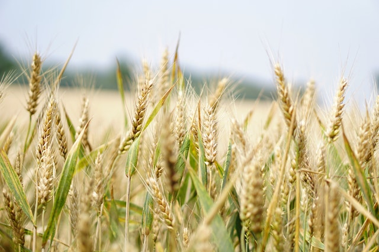

Precision agriculture is site specific crop management focused on managing field variability. Precision agriculture uses technology such as GPS to determine the specific needs of different sites within the field. This leads to a more efficient use of inputs like herbicides, pesticides, irrigation, or fertilizer. This is more sustainable for both the farm and the environment, while also producing higher yields.
Using advanced technology to plant, fertilize and harvest crops is one of the fastest growing areas in agriculture today. It is driven by the natural evolution of technology and by the daunting task of feeding 8 billion people. Pacifica PMO is proud to be on the cutting edge of the newest technology. Our staff remains committed to helping clients make the best decisions about the next steps to take with their farm operation, and how best to use the data that the technology provides.
Pacifica PMO provides an assessment of your farm’s current precision agriculture capabilities. It will help you identify future strategies, provide you with an action plan, and give you greater confidence that the decisions you make today will be the right ones for tomorrow. These assessments are performed jointly with you, your farm management team and Pacifica PMO consultant.
Pacifica PMO provides an assessment of your farm’s current precision agriculture capabilities. It will help you identify future strategies, provide you with an action plan, and give you greater confidence that the decisions you make today will be the right ones for tomorrow. These assessments are performed jointly with you, your farm management team and Pacifica PMO consultant.
We provide timely, convenient, and affordable electronic prescriptions for fertilizer or manure. Pacifca PMO consultants can base farm field prescriptions from subfield soil sample data, grid sample data, or yield maps.
This service provides rate prescriptions, paper map format and electronically, based on hybrid field and zone characteristics. Pacifica PMO is capable of retrofitting your conventional planters to convert them to variable rate planters.
Yield maps are said to be “the single most valuable dataset available to growers and their consultants.” Some basic services are data extraction from a GPS-equipped yield monitor to be organized according to the most valuable information, including harvest yield by variety, harvest yield by field, harvest efficiency, and harvest downtime. We can help answer the questions that will hone a farm’s input purchase decisions. For example, “What varieties yielded the best on other comparable farm fields?” or, “What is the optimum pH or soil type for BMR corn?” Analyzed data can be reported electronically, in tabular format, maps, or in wall-size posters.
Dairy One Integrated Farming Solutions is a full-line provider of many of the most popular brands of Precision Ag equipment, including Precision Planting, Raven, Trimble, AgLeader, Leica, EGPS, AGPS, and more. They also provide installation and support of those products.
Data collected by precision agriculture equipment, agronomy technicians, or other technology will be analyzed and delivered to the farm in order for them to make strategic agronomic decisions.